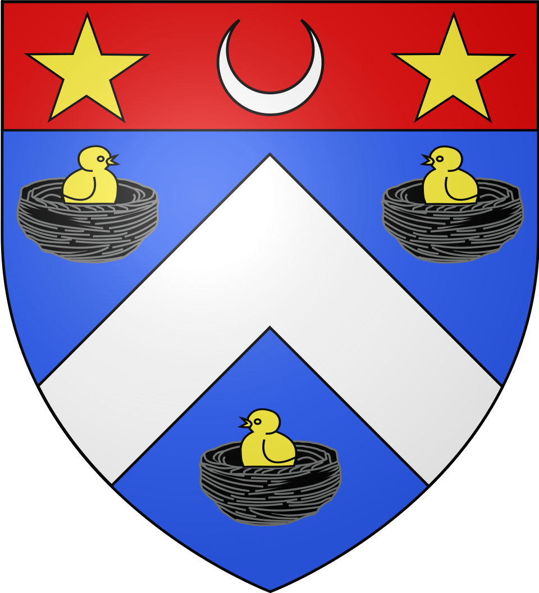
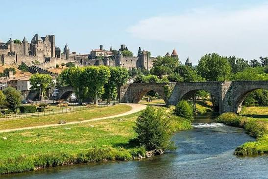

Lézignan-
CorbièresCapitale viticole des Corbières


⟹ Villes & Villages Emblématiques ⟸

Des origines anciennes au monde gallo-romain. Le territoire de Lézignan-Corbières s’inscrit dans un couloir de circulation très ancien entre la Méditerranée, la vallée de l’Aude, le Carcassès et le seuil du Lauragais. La présence humaine est attestée dès la Préhistoire dans l’environnement proche, notamment autour des reliefs de l’Alaric et des Corbières. À l’époque romaine, cette plaine fertile appartient à l’arrière-pays de Narbo Martius, capitale de la Gaule narbonnaise. Elle est structurée par des domaines agricoles, des chemins et des axes commerciaux reliant Narbonne à l’intérieur des terres. Le toponyme « Lézignan » est généralement rapproché d’un nom de domaine gallo-romain, de type Licinianum ou Liciniana, formé sur le nom latin Licinius.
Le haut Moyen Âge et l’influence de Lagrasse. Après l’Antiquité, le territoire demeure occupé et entre dans l’organisation féodale et monastique du Bas-Languedoc. Les traditions documentaires locales associent Lézignan à l’abbaye bénédictine de Lagrasse, l’une des grandes puissances religieuses des Corbières. Le bourg se développe sur la grande voie entre Narbonne et Carcassonne, situation qui favorise marchés, échanges agricoles et circulation des hommes. Autour du noyau ancien se mettent progressivement en place habitat groupé, lieux de culte, espaces de stockage et défenses.

Un bourg fortifié du Moyen Âge. Aux XIIe et XIIIe siècles, Lézignan se trouve dans une région dominée par les Trencavel puis profondément bouleversée par la croisade contre les Albigeois. Après l’intégration progressive du Carcassès au domaine capétien, Lézignan devient une châtellenie royale. Le bourg est entouré de fortifications dont le tracé a durablement marqué le plan urbain. L’église Saint-Félix, édifice majeur du centre ancien, appartient au gothique méridional : sa nef unique et surtout son massif clocher-donjon rappellent qu’un sanctuaire pouvait également participer au système défensif d’une petite ville médiévale.
De la fin du Moyen Âge à l’Ancien Régime. La position de Lézignan sur l’itinéraire Toulouse–Carcassonne–Narbonne lui assure une fonction de passage et de marché. Agriculture, élevage, artisanat et commerce local font vivre la population. Comme l’ensemble du Languedoc, la ville traverse les crises de la fin du Moyen Âge, les épidémies, les conflits et, plus tard, les guerres de Religion. Malgré ces périodes difficiles, elle conserve son rôle de bourg central pour les campagnes environnantes.
Révolution et transformation de la ville. La Révolution française supprime les anciennes structures seigneuriales et fait de Lézignan un chef-lieu de canton. Les fortifications, devenues inutiles, sont progressivement déclassées ; les boulevards qui entourent aujourd’hui le cœur historique reprennent en partie l’empreinte de l’ancienne enceinte et donnent au centre sa forme presque circulaire. Cette transformation accompagne l’ouverture de la ville et son extension hors du noyau médiéval.
Le XIXe siècle : l’âge d’or de la vigne. C’est au XIXe siècle que Lézignan change véritablement d’échelle. L’olivier et les cultures céréalières reculent au profit d’un vignoble de plus en plus spécialisé. L’arrivée du chemin de fer et l’amélioration des routes permettent d’expédier rapidement les vins vers les grands marchés. Négociants, propriétaires et maisons de commerce investissent dans des chais, des demeures et des équipements urbains. La population connaît une forte croissance : la municipalité rappelle qu’elle passe d’environ un millier d’habitants à la Révolution à près de 7 000 vers 1900.
Phylloxéra, crises viticoles et coopération. La prospérité viticole est brutalement fragilisée par le phylloxéra à la fin du XIXe siècle, puis par les crises de surproduction et de mévente. La reconstitution du vignoble sur porte-greffes résistants modifie les pratiques. Dans le contexte des grandes mobilisations viticoles languedociennes du début du XXe siècle, les producteurs s’organisent. La Coopérative de Vinification et de Vente des Vignerons de la Région de Lézignan est créée le 11 avril 1909 ; sa cave ouvre dès les vendanges de la même année. Elle est considérée comme la première cave coopérative de l’Aude et connaît rapidement plusieurs agrandissements.
Une capitale des Corbières au XXe siècle. Lézignan affirme alors sa fonction de centre économique et commercial d’un vaste territoire viticole. Les activités liées au vin — culture, vinification, tonnellerie, transport, négoce — façonnent durablement l’identité locale. Autour de la gare, des caves et des grands axes se développe une ville moderne, tandis que le centre ancien conserve l’église Saint-Félix, des traces de l’enceinte et des demeures liées à la prospérité viticole.
De la monoculture viticole à une économie plus diversifiée. Au cours du XXe siècle, les transformations de la viticulture, la mécanisation, les crises du vin et la concentration des exploitations réduisent le poids de certains métiers traditionnels. Lézignan conserve toutefois une place majeure dans le vignoble des Corbières et devient parallèlement un centre de services, d’enseignement, de commerce, de santé et d’activités pour les communes voisines. Sa position entre Narbonne et Carcassonne, à proximité de l’autoroute et des grands axes, perpétue une vocation de carrefour vieille de plusieurs siècles.
Une histoire lisible dans le paysage urbain. Le Lézignan actuel juxtapose ainsi plusieurs couches d’histoire : un noyau médiéval hérité du bourg fortifié, l’église Saint-Félix et son clocher-donjon, les boulevards tracés autour de l’ancienne enceinte, les demeures et équipements de l’âge d’or viticole, les caves coopératives et les extensions contemporaines. Cette continuité explique l’identité particulière d’une ville à la fois languedocienne, commerçante et profondément liée à la civilisation de la vigne.